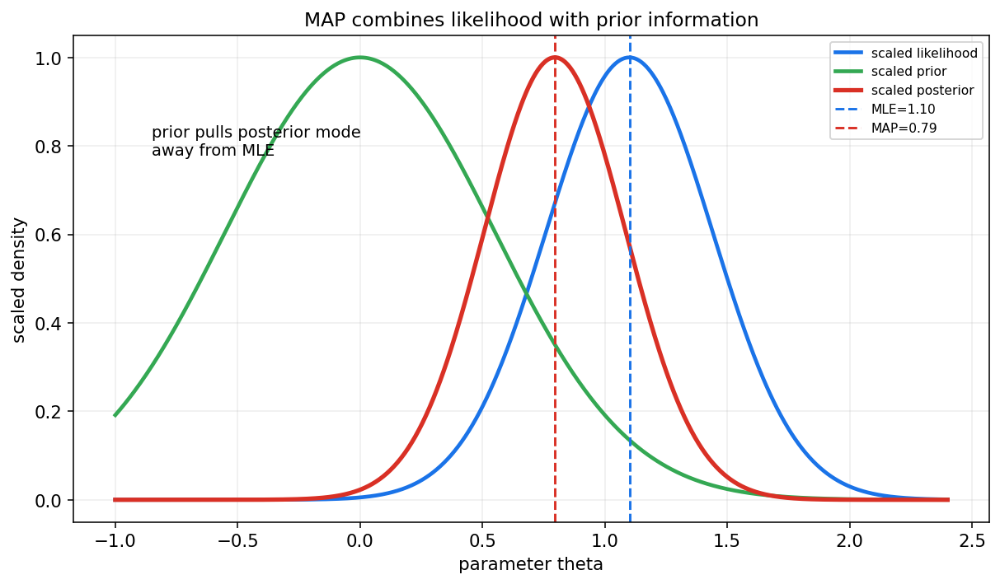
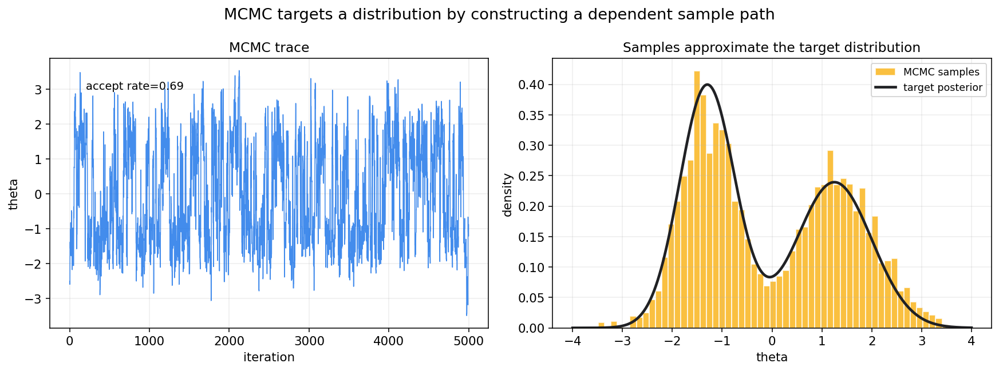
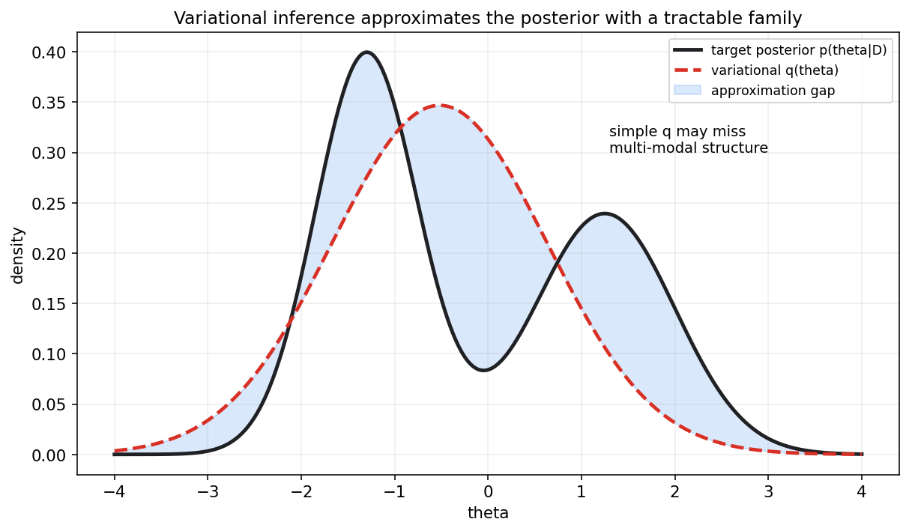
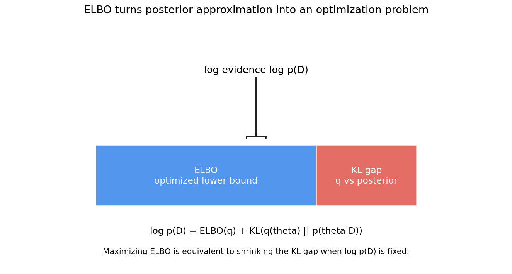

贝叶斯统计第十三章教程: 贝叶斯推断, MAP, MCMC 与变分推断
第十二章讲了贝叶斯建模的基本语言:
先验 × 似然 -> 后验.
但真实问题常常没有漂亮的闭式后验.
这时问题就从"怎么写模型"变成:1. 后验分布算不出来怎么办?
2. 只求一个最可能的参数够不够?
3. 能不能用采样近似整条后验?
4. 能不能把后验近似变成优化问题?这一章负责把贝叶斯统计从纸面公式推进到可计算的推断方法.
0. 先看全章主线
第十三章的主线可以压成下面这张图:
flowchart LR
A["后验 p(theta|D)"] --> B["计算困难<br/>积分, 归一化, 高维"]
B --> C["MAP<br/>求一个后验众数"]
B --> D["数值积分和网格法<br/>低维可用"]
B --> E["Monte Carlo<br/>用样本近似期望"]
E --> F["MCMC<br/>构造以后验为目标的链"]
F --> G["Metropolis-Hastings<br/>接受/拒绝"]
F --> H["Gibbs Sampling<br/>条件分布轮流采样"]
B --> I["Variational Inference<br/>用可优化分布近似后验"]
I --> J["ELBO<br/>把近似变成优化"]一句话概括这一章:
贝叶斯推断的难点通常不在建模, 而在计算.
MAP, MCMC 和变分推断分别代表三种近似路线:
求点, 采样, 优化一族分布.
1. 后验推断为什么会困难
1.1 后验公式看起来简单
贝叶斯公式写作:
其中:
这个分母叫证据或边际似然.
1.2 难点在积分
很多时候, 后验的未归一化形式可以写出来:
但归一化常数:
很难计算.
难点来自:
- 参数维度高
- 后验形状复杂
- 多峰结构
- 参数之间强相关
- 似然函数本身计算昂贵
1.3 需要哪些后验量
真实推断通常不只是要后验密度本身, 还要:
- 后验均值 $E[\theta\mid D]$
- 后验方差 $\mathrm{Var}(\theta\mid D)$
- 可信区间
- 后验概率 $P(\theta>0\mid D)$
- 后验预测 $p(\tilde y\mid D)$
这些量本质上常常都是积分.
2. MAP 估计
2.1 定义
MAP, maximum a posteriori, 是后验密度最大的点:
因为分母 $p(D)$ 与 $\theta$ 无关, 所以等价于:
取对数:
2.2 MAP 与 MLE
MLE 只最大化似然:
MAP 最大化似然乘先验:
如果先验是常数, MAP 和 MLE 形式上相同.
如果先验有信息, MAP 会被先验拉动.

图中蓝线表示似然, 绿线表示先验, 红线表示后验.
MLE 位于似然峰值, MAP 位于后验峰值.
2.3 MAP 和正则化
MAP 的目标:
等价于最小化负对数后验:
其中 $-\log p(\theta)$ 就像正则化项.
例如:
- 高斯先验 -> L2 正则化
- Laplace 先验 -> L1 正则化
这也是贝叶斯和机器学习优化目标之间的重要连接.
2.4 MAP 不是完整贝叶斯推断
MAP 只是一个点估计.
它不会告诉你:
- 后验有多宽
- 后验是否偏态
- 是否多峰
- 参数之间是否强相关
- 后验预测有多不确定
所以 MAP 适合做快速点估计或初始化, 但不能替代整条后验分布.
3. 网格法与简单数值积分
3.1 网格法直觉
如果参数只有一维或二维, 可以在参数空间放一个网格:
然后计算每个点的未归一化后验:
归一化:
这样就得到一个离散近似后验.
3.2 用网格近似期望
后验期望可近似为:
这对教学和低维模型非常直观.
3.3 维度灾难
如果每个参数维度放 100 个网格点:
- 1 维需要 100 点
- 2 维需要 10000 点
- 10 维需要 $100^{10}$ 点
维度一高, 网格法很快不可行.
4. Monte Carlo 思想
4.1 用随机样本近似积分
如果我们能从后验中抽样:
那么后验期望可以用样本均值近似:
这就是 Monte Carlo 的核心.
4.2 为什么难
难点是:
我们通常不能直接从复杂后验中独立抽样.
MCMC 的目标就是解决这个问题:
构造一条 Markov 链, 让它的平稳分布正好是目标后验.
5. MCMC 的基本直觉
5.1 不是独立样本
MCMC 产生的是一条相关样本路径:
后一个状态依赖前一个状态.
如果链设计得正确并且运行足够久, 这些样本的长期分布会接近目标后验.

左图是采样轨迹, 右图是去掉 burn-in 后样本直方图和目标后验的对比.
5.2 burn-in
链从初始点出发时, 早期样本可能还没有进入目标分布的高概率区域.
这些早期样本常被丢弃, 称为 burn-in.
5.3 混合 mixing
混合描述链在后验空间中移动得是否充分.
如果链长期困在一个区域, 即使样本数量很多, 也不代表推断可靠.
这正是本章的重要提醒:
MCMC 样本多不等于一定靠谱, 还要看收敛和混合.
6. Metropolis-Hastings 初步
6.1 基本步骤
Metropolis-Hastings 是一类通用 MCMC 算法.
从当前状态 $\theta$ 出发:
- 从提议分布采一个候选值:
- 计算接受概率:
- 以概率 $a$ 接受 $\theta'$, 否则留在 $\theta$.
6.2 归一化常数会抵消
注意后验:
在接受率中是比值, 归一化常数 $Z$ 会抵消.
这就是 MCMC 强大的原因之一:
只要能计算未归一化后验, 就可能构造采样算法.
6.3 提议分布很重要
如果提议步长太小, 链移动很慢.
如果提议步长太大, 候选值常被拒绝.
好的提议分布要在探索范围和接受率之间平衡.
7. Gibbs Sampling 初步
7.1 条件分布轮流采样
Gibbs Sampling 适合多维参数:
如果每个条件分布容易采样:
就可以轮流更新每个分量:
依次循环.
7.2 和 Metropolis-Hastings 的关系
Gibbs 可以看作接受率总为 1 的特殊 MCMC.
因为每一步直接从完整条件分布采样.
7.3 使用场景
Gibbs 常见于:
- 共轭层次模型
- 混合模型
- Bayesian regression
- 主题模型等潜变量模型
如果条件分布不可直接采样, 可以在 Gibbs 步骤内部嵌入 Metropolis-Hastings.
8. MCMC 诊断
8.1 为什么需要诊断
MCMC 的理论保证通常是渐近的.
实际运行中必须检查样本是否可信.
常见诊断包括:
- trace plot 是否稳定
- 多条链是否给出相近结果
- 自相关是否很高
- effective sample size 是否足够
- R-hat 是否接近 1
- 是否存在 divergent transitions, 对 HMC/NUTS 尤其重要
8.2 自相关和有效样本量
MCMC 样本彼此相关.
所以 10000 个 MCMC 样本的信息量可能远少于 10000 个独立样本.
有效样本量 ESS 试图衡量:
这条相关样本链大约相当于多少个独立样本.
8.3 多峰后验的风险
如果后验有多个模式, 链可能只探索其中一个模式.
这会让样本直方图看似稳定, 但实际漏掉重要区域.
多起点, 更好的提议分布, 重新参数化, 或更先进采样器可能有帮助.
9. Variational Inference 初步
9.1 核心想法
变分推断, VI, 不直接采样后验.
它先选一个易处理的分布族:
然后在这个分布族中寻找最接近真实后验的一个:
这里 $\phi$ 是变分参数.

9.2 用 KL 衡量接近
常见目标是最小化:
但真实后验含有难算的归一化常数.
于是 VI 通常转而最大化 ELBO.
9.3 VI 和 MCMC 的差异
粗略比较:
- MCMC 用相关样本近似后验
- VI 用一个可优化分布近似后验
MCMC 往往更接近完整后验, 但计算可能慢.
VI 往往更快, 更适合大规模模型, 但会有近似偏差.
10. ELBO 直觉
10.1 分解公式
对任意变分分布 $q(\theta)$, 有:
因为 KL 非负:
所以:
ELBO 是 log evidence 的下界.

10.2 最大化 ELBO
由于 $\log p(D)$ 对 $q$ 固定, 最大化 ELBO 等价于缩小:
所以 VI 把后验近似变成了优化问题.
10.3 ELBO 的展开形式
ELBO 常写成:
也可理解为:
这和机器学习中的正则化, 自编码器, 生成模型都有联系.
11. 何时要点估计, 何时要分布估计
11.1 MAP 适合什么时候
MAP 适合:
- 快速求一个参数点
- 后验近似单峰且很窄
- 用作更复杂算法的初始化
- 模型部署只需要点参数
但 MAP 不适合:
- 后验很宽
- 后验多峰
- 需要可靠不确定性
- 需要后验预测区间
11.2 MCMC 适合什么时候
MCMC 适合:
- 后验维度中等
- 需要较高质量的不确定性估计
- 模型可计算但没有闭式后验
- 诊断成本可接受
限制是:
- 可能慢
- 需要收敛诊断
- 高维复杂模型可能混合困难
11.3 VI 适合什么时候
VI 适合:
- 大规模数据或高维模型
- 需要较快推断
- 可以接受近似偏差
- 需要和深度学习优化框架结合
限制是:
- 可能低估后验方差
- 简单分布族可能漏掉多峰结构
- 结果依赖近似族选择
11.4 实用判断
如果只关心一个稳定点估计, MAP 可能足够.
如果关心区间, 尾部风险和预测不确定性, 更应保留分布信息.
这就是贝叶斯推断的核心价值:
不确定性不是附属品, 而是推断结果的一部分.
12. 本章主线总结
第十三章可以压成几句话:
- 后验推断难在归一化和积分.
- MAP 求后验众数, 是点估计, 不是完整贝叶斯.
- 网格法直观但只适合低维.
- Monte Carlo 用样本均值近似后验期望.
- MCMC 构造以后验为平稳分布的 Markov 链.
- Metropolis-Hastings 用提议和接受率探索后验.
- Gibbs Sampling 通过完整条件分布轮流采样.
- MCMC 必须检查混合, 收敛和有效样本量.
- VI 用可处理分布族近似后验.
- ELBO 把后验近似变成优化问题.
本章最重要的提醒是:
贝叶斯计算方法不是互相替代的万能按钮,
而是不同近似路线, 各自有速度, 精度和诊断成本.
13. 典型题型与实战清单
13.1 典型题型
- 写 MAP 目标
- 写 log likelihood
- 加上 log prior
- 说明与正则化关系
- 比较 MLE 与 MAP
- MLE 只看似然
- MAP 还看先验
- 常数先验时二者可一致
- 用 Monte Carlo 近似后验期望
- 从后验样本计算 $g(\theta)$
- 对样本取平均
- 写 Metropolis-Hastings 接受率
- 包括目标密度比
- 包括提议分布校正
- 解释 Gibbs Sampling
- 条件分布轮流采样
- 每一步接受率为 1
- 解释 ELBO
- log evidence = ELBO + KL
- 最大化 ELBO 等价于缩小 KL gap
13.2 实战清单
做贝叶斯计算时, 可以按下面顺序检查:
- 只是要点估计, 还是要后验分布?
- 后验是否低维, 能否网格近似?
- 是否能写未归一化后验?
- MAP 是否足以表达不确定性?
- 如果用 MCMC, 是否跑了多条链?
- trace plot 是否稳定?
- R-hat 和 ESS 是否合理?
- 是否存在多峰或强相关?
- 如果用 VI, 近似族是否太弱?
- 后验预测是否做了模型检查?
14. 典型误区
误区 1: 把 MAP 当成完整贝叶斯推断
MAP 只是后验最高点.
它不包含后验宽度, 偏态, 多峰和预测不确定性.
误区 2: 以为 MCMC 样本越多越可靠
如果链混合很差, 100000 个样本也可能只来自局部区域.
样本数量必须和收敛诊断一起看.
误区 3: 忽略 burn-in 和初始值
初始阶段可能不代表目标后验.
多起点和 trace plot 是基本检查.
误区 4: 把 VI 当成无损压缩
VI 是近似.
如果近似族太简单, 可能低估方差或漏掉多个模式.
误区 5: 只看参数后验, 不做后验预测检查
模型是否能生成类似观测数据, 是贝叶斯建模的重要检查.
误区 6: 以为归一化常数永远不重要
MCMC 接受率中常数会抵消, 但模型比较和边际似然问题中常数可能很重要.
15. 和前后章节的连接点
15.1 和第十二章的连接
第十二章讲后验的概念和共轭闭式更新.
本章处理非共轭或复杂后验的计算路线.
15.2 和第十四章的连接
贝叶斯回归, 层次模型和贝叶斯分类往往需要 MAP, MCMC 或 VI 才能计算.
第十四章会把这些推断方法放进具体模型.
15.3 和统计学习的连接
VI 和 ELBO 是许多生成模型和深度概率模型的基础.
例如变分自编码器就直接使用了 ELBO 思想.
16. 本章收尾
贝叶斯建模说的是:
后验代表数据之后的不确定性.
贝叶斯计算进一步问:
这条后验分布实际怎么拿到?
MAP 给一个点, MCMC 给一串相关样本, VI 给一个优化得到的近似分布.
理解这三条路线, 后面再看贝叶斯回归, 层次模型和深度生成模型时, 就不会只停留在公式表面.